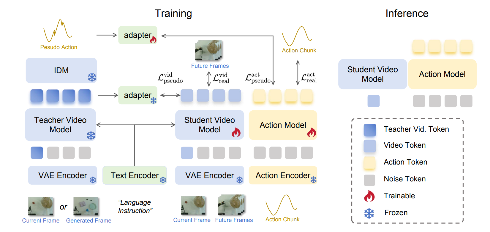
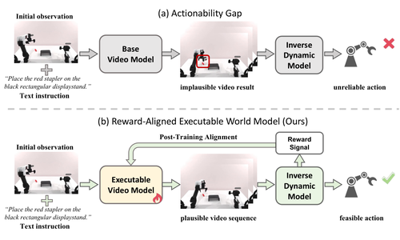
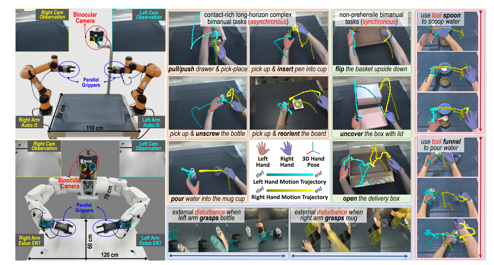
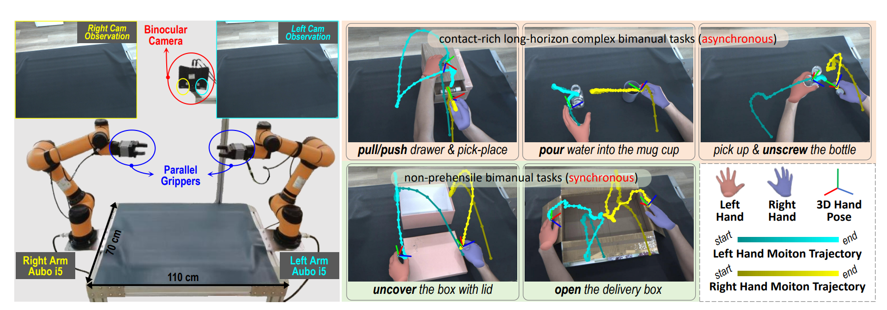
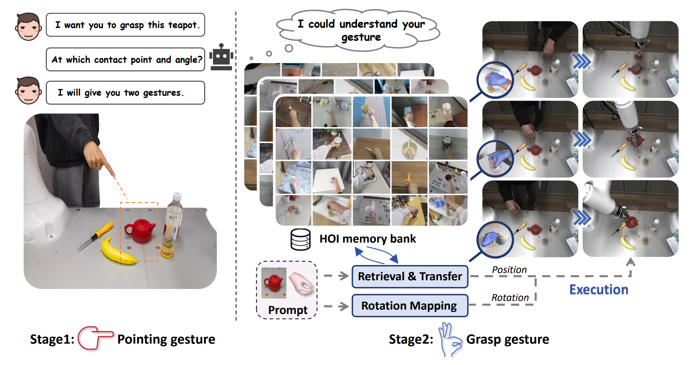
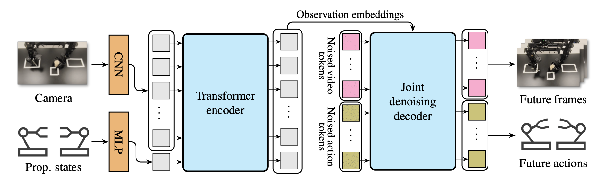
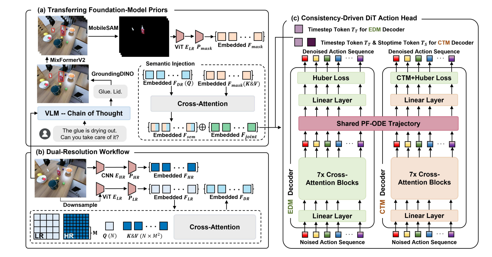

Sep. 2025 – Present
Ph.D. in Computer Science
Ph.D. Student · CUHK-SZ
I am a Ph.D. student in Computer Science at the School of Data Science, The Chinese University of Hong Kong, Shenzhen (CUHK-Shenzhen), advised by Prof. Kui Jia. Previously, I worked with Prof. Guyue Zhou at the Institute for AI Industry Research (AIR), Tsinghua University. I also conducted research at King Abdullah University of Science and Technology (KAUST) under the supervision of Prof. Mohamed Elhoseiny and worked as a Research Intern at DexForce Technology. Before that, I received my B.Eng. in Automation with honors from Harbin Institute of Technology, Weihai.
My research focuses on building embodied intelligence for perceiving and interacting with the physical world. In particular, I am interested in developing generalizable robotic manipulation policies and learning world models that capture how the physical world appears, behaves, and evolves.

arXiv preprint, 2026

arXiv preprint, 2026

IEEE Transactions on Pattern Analysis and Machine Intelligence (TPAMI), 2026

Robotics: Science and Systems (RSS), 2025

arXiv preprint, 2026
arXiv preprint, 2026
IEEE Transactions on Pattern Analysis and Machine Intelligence (TPAMI), 2026
Robotics: Science and Systems (RSS), 2025


Generalizable policies for reliable, long-horizon manipulation.
Predictive models that remain physically grounded and executable.
Connecting perception, imagination, and action in the physical world.